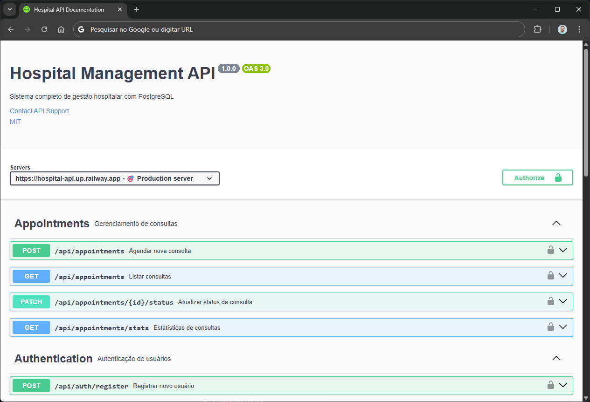

Na área de Qualidade de Software, frequentemente nos concentramos em ferramentas de automação, frameworks de teste e metodologias ágeis. No entanto, há um elemento fundamental que muitas vezes é negligenciado, mas que tem impacto direto na precisão dos nossos testes e relatórios: a documentação de APIs.

Documentação Swagger da Hospital Management API que desenvolvi
Por Que a Documentação é Crucial para a Qualidade?
Durante o desenvolvimento da minha Hospital Management API, percebi como uma documentação bem elaborada funciona como um contrato entre desenvolvedores e testadores. Ela define claramente os comportamentos esperados, os formatos de requisição e resposta, os códigos de status e os possíveis erros. Sem este "contrato", os testes se baseiam em suposições, o que compromete sua precisão e confiabilidade.
- Especificidade: Documentações como Swagger/OpenAPI fornecem especificações precisas que podem ser usadas para gerar testes automatizados.
- Consistência: Garante que todos os envolvidos no projeto tenham a mesma compreensão sobre o funcionamento da API.
- Validação: Permite validar se as implementações correspondem às especificações documentadas.
"Na minha experiência com a Hospital Management API, a documentação não foi apenas uma etapa do processo - foi a base que permitiu criar testes confiáveis e métricas precisas desde o primeiro dia."
Documentação como Base para Relatórios Precisos
Quando temos uma documentação clara e atualizada, podemos criar testes que realmente medem o que importa. Na prática com minha API hospitalar, isso se refletiu diretamente na qualidade dos relatórios e métricas:
- Cobertura Real: Sabia exatamente quais endpoints e cenários precisavam ser testados.
- Métricas Confiáveis: Os números de sucesso/falha refletiam com precisão o estado da aplicação.
- Rastreabilidade: Podia correlacionar falhas nos testes com especificações na documentação.
- Automação Eficiente: Ferramentas geravam casos de teste diretamente da documentação.
🚀 Conheça o Projeto Hospital Management API
Desenvolvi esta API de gestão hospitalar para demonstrar na prática como uma boa documentação impacta na qualidade dos testes. O projeto inclui:
- Agendamento e gestão de consultas médicas
- Sistema de autenticação e autorização
- Estatísticas em tempo real
- Documentação e possibilidade de testes completos com Swagger
Fique à vontade para explorar, testar os endpoints e ver na prática como a documentação facilita os testes!
Conclusão
Investir tempo na criação e manutenção de uma documentação de API robusta não é apenas uma boa prática de desenvolvimento - é uma estratégia fundamental para garantir a qualidade do software. Na minha experiência com a Hospital Management API, essa base documental foi essencial para testes precisos, relatórios confiáveis e métricas que realmente refletiam o estado da aplicação.
No final, a qualidade dos nossos testes está diretamente relacionada à qualidade da nossa documentação. Antes de buscar ferramentas mais avançadas de automação, certifique-se de que sua base documental está sólida e atualizada.
💼 Leve esse conteúdo para o LinkedIn!
Se este conteúdo fez sentido para você, que tal compartilhar essas ideias com sua rede profissional?
"Documentação de APIs não é burocracia - é a base para testes de qualidade confiáveis. No meu último projeto, essa abordagem fez toda a diferença nos resultados."